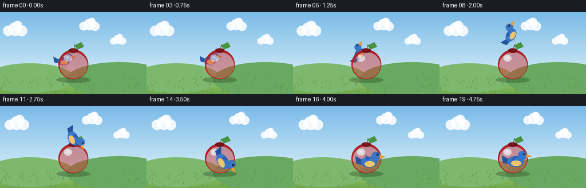
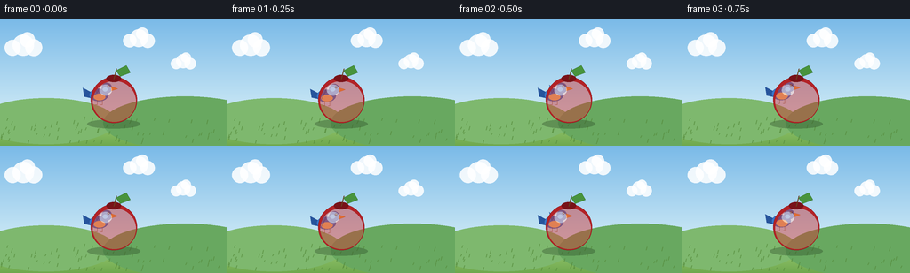

CODING AGENTS AS PIXEL WORLD MODELS
traex/Seed-2.1-Pro-0915 · dynamic_spatial_relationship_0038
点击播放 · 原生 RGB 像素
逐轮保存的候选
回放视频、检查图与代码变化。
每份候选均可单独播放。实际图片检查记录在下方工具轨迹中。
候选 01播放与检查图
点击播放 · 原生 RGB 像素


展开代码变化
--- 上一保存版本
+++ 本次保存版本
@@ -0,0 +1,236 @@
+"""Procedural text-to-video generator.
+
+Scene: a bird is behind an apple, then flies up and over it and lands
+in front of the apple. Depth is expressed through draw order and scale:
+the bird is occluded by the apple while behind, and occludes it in front.
+
+Pure Python + numpy + PIL, no external assets or models.
+"""
+
+import math
+
+import numpy as np
+from PIL import Image, ImageDraw
+
+import artifact_io
+
+W, H = 256, 144
+N_FRAMES = 20
+FPS = 4.0
+SS = 3 # supersampling factor for anti-aliased shape rendering
+
+APPLE = {"x": 128.0, "y": 92.0, "r": 26.0}
+
+# Bird keyframes: (frame, x, y, depth 0=behind .. 1=front, scale)
+KEYS = [
+ (0, 112.0, 86.0, 0.0, 0.82),
+ (3, 112.0, 86.0, 0.0, 0.82),
+ (9, 126.0, 36.0, 0.55, 0.95),
+ (14, 134.0, 98.0, 1.0, 1.10),
+ (19, 134.0, 98.0, 1.0, 1.10),
+]
+
+
+def smoothstep(t):
+ t = max(0.0, min(1.0, t))
+ return t * t * (3.0 - 2.0 * t)
+
+
+def bird_pose(frame):
+ """Interpolate position / depth / scale between keyframes."""
+ for (f0, x0, y0, z0, s0), (f1, x1, y1, z1, s1) in zip(KEYS, KEYS[1:]):
+ if frame <= f1:
+ u = smoothstep((frame - f0) / max(1e-9, f1 - f0))
+ x = x0 + (x1 - x0) * u
+ y = y0 + (y1 - y0) * u
+ z = z0 + (z1 - z0) * u
+ s = s0 + (s1 - s0) * u
+ break
+ else:
+ x, y, z, s = KEYS[-1][1:]
+ # gentle bob while holding
+ if frame <= 3 or frame >= 14:
+ y += 1.2 * math.sin(2 * math.pi * frame / 4.0)
+ return x, y, z, s
+
+
+def bird_velocity(frame):
+ x0, y0, _, _ = bird_pose(max(0, frame - 0.5))
+ x1, y1, _, _ = bird_pose(min(N_FRAMES - 1, frame + 0.5))
+ return x1 - x0, y1 - y0
+
+
+def make_background(t):
+ """Static-ish scene: sky gradient, drifting clouds, hills, grass."""
+ layer = Image.new("RGB", (W * SS, H * SS))
+ px = layer.load()
+ top = np.array([122, 186, 232])
+ bottom = np.array([208, 235, 246])
+ horizon = 112
+ for y in range(H * SS):
+ fy = y / SS
+ if fy <= horizon:
+ u = fy / horizon
+ col = tuple((top * (1 - u) + bottom * u).astype(int))
+ else:
+ u = (fy - horizon) / (H - horizon)
+ col = tuple((np.array([158, 205, 116]) * (1 - u)
+ + np.array([110, 168, 78]) * u).astype(int))
+ for x in range(W * SS):
+ px[x, y] = col
+ draw = ImageDraw.Draw(layer, "RGBA")
+
+ # distant hills
+ for cx, cy, rx, ry, color in [
+ (52, 116, 78, 26, (126, 184, 110, 255)),
+ (208, 118, 92, 30, (104, 168, 96, 255)),
+ ]:
+ draw.ellipse([(cx - rx) * SS, (cy - ry) * SS,
+ (cx + rx) * SS, (cy + ry) * SS], fill=color)
+
+ # drifting clouds (wrap around the frame)
+ for i, (cx, cy, r) in enumerate([(46, 30, 12), (176, 22, 10), (226, 48, 8)]):
+ cx = (cx + t * (1.2 + i * 0.5)) % (W + 40) - 20
+ for dx, dy, rr in [(0, 0, r), (r, 3, r * 0.8), (-r, 3, r * 0.75),
+ (r * 0.4, -r * 0.5, r * 0.7)]:
+ box = [(cx + dx - rr) * SS, (cy + dy - rr) * SS,
+ (cx + dx + rr) * SS, (cy + dy + rr) * SS]
+ draw.ellipse(box, fill=(255, 255, 255, 220))
+
+ # grass texture tufts
+ rng = np.random.default_rng(7)
+ for _ in range(70):
+ gx = rng.uniform(0, W)
+ gy = rng.uniform(horizon + 3, H - 2)
+ h = rng.uniform(2, 4.5)
+ draw.line([(gx * SS, gy * SS), ((gx + 1) * SS, (gy - h) * SS)],
+ fill=(86, 140, 60, 180), width=SS)
+ return layer
+
+
+def make_apple_layer():
+ layer = Image.new("RGBA", (W * SS, H * SS), (0, 0, 0, 0))
+ d = ImageDraw.Draw(layer, "RGBA")
+ ax, ay, r = APPLE["x"] * SS, APPLE["y"] * SS, APPLE["r"] * SS
+
+ # ground shadow
+ d.ellipse([ax - r * 1.15, ay + r * 0.85, ax + r * 1.15, ay + r * 1.25],
+ fill=(40, 70, 35, 90))
+
+ # apple body: red fruit with a darker rim and top indentation
+ d.ellipse([ax - r, ay - r, ax + r, ay + r], fill=(178, 34, 38, 255),
+ outline=(132, 20, 26, 255), width=max(1, SS // 2))
+ d.ellipse([ax - r * 0.9, ay - r * 0.82, ax + r * 0.95, ay + r * 0.95],
+ fill=(206, 52, 52, 120))
+ # indent at the top
+ d.ellipse([ax - r * 0.32, ay - r * 1.08, ax + r * 0.32, ay - r * 0.78],
+ fill=(120, 18, 24, 255))
+ # glossy highlight
+ d.ellipse([ax - r * 0.62, ay - r * 0.66, ax - r * 0.08, ay - r * 0.18],
+ fill=(255, 205, 200, 150))
+ d.ellipse([ax - r * 0.48, ay - r * 0.55, ax - r * 0.26, ay - r * 0.36],
+ fill=(255, 240, 238, 170))
+
+ # stem and leaf
+ d.line([(ax, ay - r * 0.9), (ax + r * 0.12, ay - r * 1.35)],
+ fill=(104, 66, 32, 255), width=max(2, SS))
+ leaf = [(ax + r * 0.1, ay - r * 1.28),
+ (ax + r * 0.55, ay - r * 1.5),
+ (ax + r * 0.72, ay - r * 1.18),
+ (ax + r * 0.28, ay - r * 1.02)]
+ d.polygon(leaf, fill=(72, 148, 60, 255), outline=(48, 110, 44, 255))
+ d.line([leaf[0], leaf[2]], fill=(48, 110, 44, 200), width=max(1, SS // 2))
+ return layer
+
+
+def make_bird_layer(cx, cy, scale, flap, pitch, flying):
+ """Side-view bird facing right, drawn around (cx, cy)."""
+ layer = Image.new("RGBA", (W * SS, H * SS), (0, 0, 0, 0))
+ d = ImageDraw.Draw(layer, "RGBA")
+ s = scale * SS
+ ox, oy = cx * SS, cy * SS
+
+ def P(x, y):
+ return (ox + x * s, oy + y * s)
+
+ blue = (58, 118, 200, 255)
+ blue_dark = (38, 84, 156, 255)
+ belly = (240, 196, 110, 255)
+ beak_c = (238, 158, 48, 255)
+
+ # tail
+ d.polygon([P(-11, -3), P(-23, -9), P(-21, 3), P(-11, 5)], fill=blue_dark)
+ # body
+ d.ellipse([P(-14, -8)[0], P(-14, -8)[1], P(12, 9)[0], P(12, 9)[1]],
+ fill=blue, outline=blue_dark, width=max(1, SS // 3))
+ # belly
+ d.ellipse([P(-8, -1)[0], P(-8, -1)[1], P(8, 8)[0], P(8, 8)[1]], fill=belly)
+ # head
+ d.ellipse([P(3, -16)[0], P(3, -16)[1], P(17, -2)[0], P(17, -2)[1]],
+ fill=blue, outline=blue_dark, width=max(1, SS // 3))
+ # beak
+ d.polygon([P(16, -11), P(25, -8), P(16, -5)], fill=beak_c,
+ outline=(196, 120, 30, 255))
+ # eye
+ ex, ey = P(12.5, -11.5)
+ d.ellipse([ex - 1.6 * s, ey - 1.6 * s, ex + 1.6 * s, ey + 1.6 * s],
+ fill=(20, 24, 30, 255))
+ d.ellipse([ex - 0.5 * s, ey - 0.9 * s, ex + 0.3 * s, ey - 0.1 * s],
+ fill=(255, 255, 255, 255))
+
+ # animated wing: flap in [-1, 1], tip sweeps from raised to lowered
+ tip_x, tip_y = -7.0, -5.0 - 10.0 * flap
+ d.polygon([P(1, -7), P(-4, -2), P(tip_x, tip_y), P(-2, -8)],
+ fill=(44, 96, 178, 255), outline=(28, 64, 128, 255))
+
+ # legs: trailing while flying, tucked under the body when perched
+ if flying:
+ d.line([P(-2, 7), P(-7, 12)], fill=(120, 80, 40, 255), width=max(1, SS // 2))
+ d.line([P(3, 7), P(-1, 12)], fill=(120, 80, 40, 255), width=max(1, SS // 2))
+ else:
+ for lx in (-3, 4):
+ d.line([P(lx, 8), P(lx, 14)], fill=(120, 80, 40, 255),
+ width=max(1, SS // 2))
+ d.line([P(lx, 14), P(lx - 2.5, 14)], fill=(120, 80, 40, 255),
+ width=max(1, SS // 2))
+
+ if abs(pitch) > 0.01:
+ layer = layer.rotate(-math.degrees(pitch), resample=Image.Resampling.BICUBIC,
+ center=(ox, oy))
+ return layer
+
+
+def render_frame(frame):
+ t = frame / FPS
+ bg = make_background(t).convert("RGBA")
+ apple = make_apple_layer()
+
+ x, y, z, scale = bird_pose(frame)
+ vx, vy = bird_velocity(frame)
+ flying = 3 < frame < 15
+ speed = math.hypot(vx, vy)
+ pitch = math.atan2(vy, max(abs(vx), 1e-6)) * 0.8 if flying and speed > 0.5 else 0.0
+ flap_freq = 6.0 if flying else 2.5
+ flap = math.sin(2 * math.pi * flap_freq * t + (0.0 if flying else 0.6))
+ bird = make_bird_layer(x, y, scale, flap, pitch, flying)
+
+ # Depth order: z < 0.5 -> bird behind the apple; otherwise in front.
+ if z < 0.5:
+ bg.alpha_composite(bird)
+ bg.alpha_composite(apple)
+ else:
+ bg.alpha_composite(apple)
+ bg.alpha_composite(bird)
+
+ out = bg.convert("RGB").resize((W, H), Image.Resampling.LANCZOS)
+ return np.asarray(out, dtype=np.uint8)
+
+
+def main():
+ frames = np.stack([render_frame(i) for i in range(N_FRAMES)], axis=0)
+ artifact_io.save(frames, ".")
+ print(f"saved {frames.shape}")
+
+
+if __name__ == "__main__":
+ main()
可观测工具轨迹
实际执行的命令与返回图片。
命令 1exit 0
/bin/bash -lc 'cat prompt.txt; echo ---; cat GENERATION_RULES.md; echo ---; cat task_spec.json'
命令 2exit 0
/bin/bash -lc 'ls -la; find . -maxdepth 2 -name "artifact_io*" 2>/dev/null; python3 -c "import artifact_io; print(artifact_io.__file__)" 2>&1 | tail -1'
命令 3exit 0
/bin/bash -lc 'cat artifact_io.py'
命令 4exit 0
/bin/bash -lc 'cd . && python3 generate.py && ls frames | head -5 && ls -la pixels.npz inspection.png index.html'
命令 5exit 0
/bin/bash -lc "cd . && python3 - <<'EOF'
import numpy as np
from PIL import Image
def load(i): return np.asarray(Image.open(f\"frames/{i:02d}.png\"))
def classify(px):
r,g,b = px
if r>140 and g<90 and b<90: return \"apple-red\"
if b>150 and r<110 and g<150: return \"bird-blue\"
return f\"other{tuple(px)}\"
# overlap points: bird center vs apple center
# frame 2: bird at (112,86); frame 16: bird at (134,98); apple center (128,92), r=26
for i,(bx,by) in [(2,(112,86)),(6,(118,60)),(9,(126,40)),(12,(130,72)),(16,(134,95)),(19,(134,95))]:
f=load(i)
print(i, \"bird-center px:\", classify(f[by,bx]), tuple(f[by,bx]),
\"| apple center px:\", classify(f[92,128]), tuple(f[92,128]))
# frame-to-frame change sanity: ensure motion exists
prev=load(0)
for i in range(1,20):
cur=load(i); diff=(cur"'!=prev).any(axis=2).mean()
print(f"delta {i-1}->{i}: {diff:.3f}", end=" ")
prev=cur
print()
# blue pixel counts per frame (bird presence)
for i in range(0,20,2):
f=load(i); blue=((f[:,:,2]>150)&(f[:,:,0]<110)&(f[:,:,1]<150)).sum()
print(i, "blue px:", blue)
EOF'命令 6exit 0
/bin/bash -lc "cd . && python3 - <<'EOF'
import numpy as np
from PIL import Image
f=np.asarray(Image.open(\"frames/02.png\"))
# print color map around apple center
for y in range(78,108,3):
row=[]
for x in range(104,152,4):
r,g,b=f[y,x]
if r>140 and g<100 and b<100: c=\"R\" # apple red
elif b>150 and r<110: c=\"B\" # bird blue
elif r>200 and g>150 and b<130: c=\"O\" # orange/beak
elif r>200 and g>200 and b>200: c=\"W\" # white
elif g>140 and r<170: c=\"G\" # grass/green
elif r>170 and g>110 and b>110: c=\"P\" # pink blend
else: c=\".\"
row.append(c)
print(y,\"\".join(row))
print()
# unique-ish colors inside apple disk
ys,xs=np.mgrid[0:144,0:256]
mask=((xs-128)**2+(ys-92)**2)<=20**2
pix=f[mask]
from collections import Counter
cnt=Counter(map(tuple,pix.reshape(-1,3)))
for c,n in cnt.most_common(10): print(c,n)
EOF"保存候选 1 份；完成命令 6 次；可验证图片返回 0 张。原始 API 响应与完整日志保留在本地。